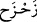

bildirmekdir.
Bir hadis-i şerifte şöyle geçmektedir: “Allah Teâlâ, Âdem’i yarattığında, yeryüzü
kendisinden alınan toprak parçaları yüzünden Allah’a şikâyette bulundu. Allah da
topraktan alınanların tekrar toprağa iâde edileceğini vaadetti. Dolayısıyla hiçbir
kişi yoktur ki, yaratıldığı toprağa defnedilmiş olmasın.”
“Kıyâmet günü” yani kabirlerinizden kalktığınız gün; hayır olsun, şer olsun yaptığınız
her şeyin karşılığı size tam olarak verilecektir. Buradaki “tam olarak verme” lâfzında,
insanların bazı ecirlerinin daha önce verileceğine işâret edilmektedir. Hz. Peygamber
(s.a.)’in şu sözü de bunu bildirir: “Kabir, ya cennet bahçelerinden bir bahçe, ya da
cehennem çukurlarından bir çukurdur.”[162]
“Kim cehennemden uzaklaştırılıp cennete konursa, kurtuluşa ve murâdına
ermiştir.” “Uzaklaştırılma” diye ifade ettiğimiz (
) aslında acele çekmek,
tekrarlamak, uzaklaştırmak, öteye çekmek demektir. Hz. Peygamber’den şöyle
nakledilmiştir: “Kim, cehennemden uzaklaştırılıp cennete konulmak isterse, ölümü
ona; ancak Allah’a ve âhiret gününe îman ederek ve kendisine davranılmasını
istediği tarzda insanlara davranarak gelsin!”[163]
“Bu dünya hayatı”nın lezzet ve zînetleri, aldatma metâından başka bir şey değildir.
Burada Allah Teâlâ dünya hayatını, kaliteli mal arayan birine kaliteli olmayan malın
kaliteli imiş gibi gösterilerek aldatılmasına benzetmektedir. Fakat dünya metâının
aldatma metâı oluşu, dünyayı âhirete tercih edenler içindir. Âhireti dünyaya tercih
edenler için ise, dünya metâı, âhirete ulaştırıcı bir metâ olur. “Ve o, hayır (mal)
sevgisine aşırı derecede düşkündür.” (el-Âdiyât, 100/8) buyururken Cenâb-ı Hak
dünya metâını bu sebeple “hayır” diye adlandırmıştır. Öyle ise akıllı biri, dünyaya
aldanmamalıdır. Çünkü dünyanın dokunuşu yumuşak, ama zehri öldürücüdür. Dünyanın
zâhiri sevinç yumağı, bâtını ise şer yuvasıdır.
Sana dünya der ki gece ve gündüz:
Benim dostluğumdan sakın, bana eyle perhiz
Benim rengime, kokuma câzibeme aldanma sakın,
Çünkü benim gülmem daima ağlamama yakın.
Hz. Peygamber şöyle buyurmaktadır: “Allah Teâlâ şöyle buyurur: “Sâlih kullarıma
hiçbir gözün görmediği; hiçbir kulağın duymadığı, hiç kimsenin aklına hayaline
gelmeyen şeyler hazırladım. İsterseniz: “Yaptıklarına karşılık olarak, onlar için
nice sevindirici ve göz aydınlatıcı nîmetler saklandığını hiç kimse bilemez.” (es-
Secde, 32/17) âyet-i celîlesini okuyun. Cennette öyle bir ağaç vardır ki, binekli biri,
hiç kesintisiz yüz sene onun gölgesinde gidebilir. Dilerseniz, “Upuzun gölgeler” (el-
Vâkıa, 56/30) âyet-i kerîmesini okuyun. Cennette bir kamçı uzunluğundaki yer,
dünyadan da dünyadakilerden de hayırlıdır. Dilerseniz, “Kim cehennemden